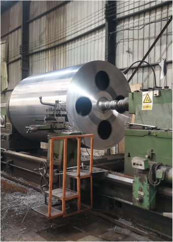
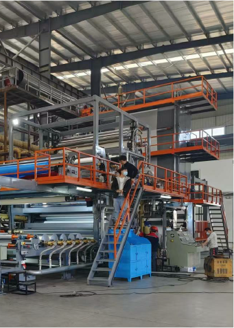

Máy cán màng PVC là gì?
Máy cán màng PVC dùng để ghép lớp, gia nhiệt, ép phẳng và xử lý bề mặt cho vật liệu dạng cuộn. Khi chọn máy, cần bắt đầu từ sản phẩm đầu ra chứ không chỉ từ tên máy.
Máy này thường làm ra sản phẩm gì?
Trong nhà máy vật liệu trang trí, máy cán màng PVC thường được dùng cho màng vân gỗ, màng vân đá, lớp phủ bảo vệ, vật liệu nội thất, da nhân tạo mềm và một số vật liệu dạng cuộn cần ghép nhiều lớp.
| Sản phẩm đầu ra | Màng PVC trang trí, màng nội thất, màng bảo vệ bề mặt, vật liệu mềm dạng cuộn. |
|---|---|
| Công đoạn chính | Xả cuộn, gia nhiệt, phủ keo hoặc ghép lớp, ép phẳng, làm mát, thu cuộn. |
| Điểm ảnh hưởng chất lượng | Nhiệt độ, áp lực ép, lực căng, độ phẳng, độ bám lớp, tốc độ ổn định và mép cuộn. |

Hình minh họa thành phẩm giúp người mua hiểu máy phục vụ nhóm vật liệu nào. Khi báo giá vẫn cần mẫu vật liệu thật.
Nhìn theo dòng vật liệu sẽ dễ chọn máy hơn
Với màng PVC, người mua nên mô tả vật liệu đi qua những công đoạn nào: xả cuộn, in hoặc phủ, sấy, cán ghép, thu cuộn và xẻ cuộn.

Hình minh họa quy trình, không phải ảnh máy thực tế. Khi tư vấn cấu hình, cần đối chiếu lại vật liệu, chiều rộng, tốc độ, đường kính cuộn và cách gia nhiệt.
Không nên chọn chỉ theo chữ “máy cán màng”
Cùng một tên máy, cấu hình có thể khác nhiều theo vật liệu, lớp ghép và yêu cầu thành phẩm.
| Vật liệu nền | PVC, PP, PET, màng mềm, màng cứng, da nhân tạo hoặc vật liệu trang trí dạng cuộn. |
|---|---|
| Lớp cần ghép | Màng bảo vệ, lớp in, lớp phủ chức năng, lớp nền hoặc vật liệu có keo. |
| Khổ rộng và độ dày | Ghi rõ khổ vật liệu đầu vào, khổ thành phẩm, độ dày từng lớp và dung sai cho phép. |
| Gia nhiệt | Cần xác nhận dùng điện, dầu truyền nhiệt, khí gas hoặc phương án sấy riêng theo vật liệu. |
| Thu/xả cuộn | Đường kính cuộn, lõi giấy, trọng lượng cuộn, cách bốc dỡ và yêu cầu không lệch mép. |
Những câu hỏi kỹ thuật nên hỏi nhà cung cấp
Máy có chạy được vật liệu thật của tôi không?
Nên gửi mẫu vật liệu, ảnh bề mặt và thông số độ dày. Nếu vật liệu dễ co, dễ nhăn hoặc có lớp phủ đặc biệt, cần xác nhận phương án nhiệt và lực căng.
Tốc độ báo trên máy có phải tốc độ sản xuất ổn định không?
Tốc độ tối đa chỉ là tham khảo. Người mua nên hỏi tốc độ ổn định khi chạy vật liệu thật, đặc biệt khi vật liệu dày, khổ rộng hoặc cần độ bám lớp cao.
Nghiệm thu nên kiểm tra gì?
Kiểm tra độ phẳng, độ bám lớp, mép cuộn, đường kính cuộn, nhiệt độ vùng gia nhiệt, lực căng, tiếng ồn, tủ điện và thao tác đổi cuộn.
Thông tin nên gửi khi hỏi giá
- Sản phẩm muốn làm ra: màng trang trí, màng bảo vệ, vật liệu nội thất hay vật liệu khác.
- Vật liệu từng lớp, độ dày, khổ rộng và đường kính cuộn.
- Tốc độ hoặc sản lượng mong muốn theo ca/ngày.
- Yêu cầu bề mặt: bóng, mờ, vân, độ bám, không nhăn hoặc không lệch mép.
- Nguồn điện, không gian lắp đặt và phương thức gia nhiệt mong muốn.

Với vật liệu dạng cuộn, chất lượng không chỉ nằm ở bề mặt mà còn ở độ ổn định khi thu cuộn.